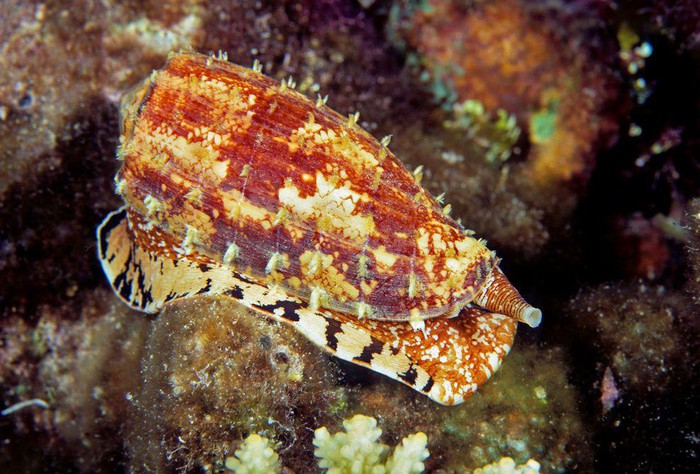
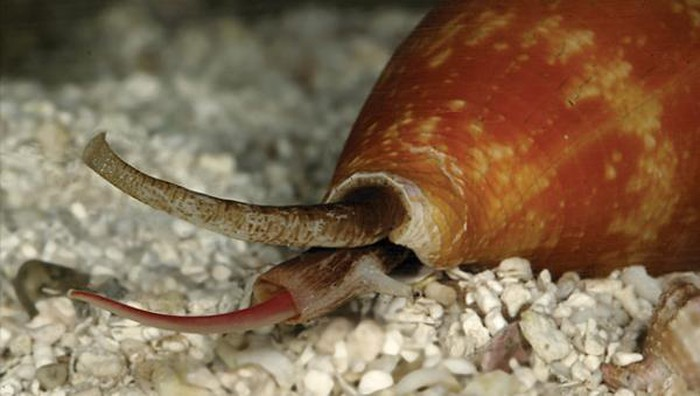

Chúng là loài săn mồi và có nọc độc với mức độ khác nhau hứa hẹn như là một nguồn dược chất mới quan trọng. Các loài nguy hiểm nhất (như ốc nón địa lý) săn cá bằng cách sử dụng hàm răng giống như lao móc và một tuyến độc. Những con khác săn và ăn sâu biển hoặc các động vật thân mềm. Tuy di chuyển chậm chạp nhưng ốc nón vẫn bắt được cá nhờ khả năng ẩn nấp tài tình, chất độc và một bộ phận độc đáo của chúng. Chúng săn mồi nhờ một ống hút và một tuyến độc. Vào ban ngày ốc nón nghỉ ngơi. Khi màn đêm buông xuống, chúng di chuyển trên đáy biển giống như những con ốc vô hại khác. Chúng rình mồi bằng cách náu thân dưới cát và chỉ giơ ống hút lên. Khi con mồi tới gần, chúng sẽ tóm chặt mục tiêu rồi tiêm chất độc vào cơ thể mồi. Chất độc khiến con mồi tê liệt và ốc nón nuốt chửng nó một cách dễ dàng.
Loài ốc nón xinh đẹp nhìn có vẻ chậm chạp này thực chất là một loài ốc biển cực độc có tên khoa học là Conus geographus. Kích thước của ốc nón dài khoảng 10 đến 15 cm, sống. Chúng sở hữu một loại chất độc phức tạp và là loại độc tố mạnh nhất thế giới. Chất độc này khiến nạn nhân dính phải run lẩy bẩy, tê liệt chân tay, mắt mờ đi và ngừng thở sau vài giờ đồng hồ. Tuy nhiên, loài ốc này chỉ sử dụng chất độc để tự vệ và săn mồi chứ không chủ động tấn công.
